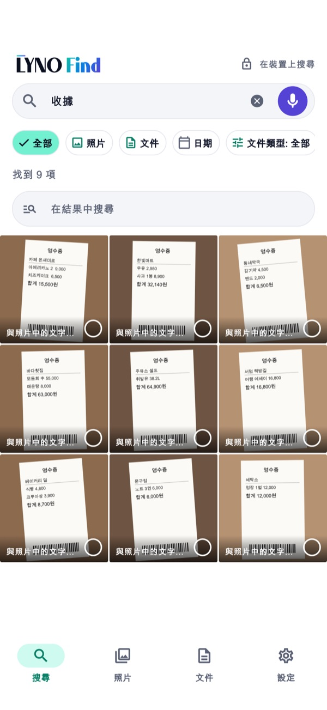

提高搜尋準確度的方法
1. 只輸入要找的詞
只寫想找的內容最準確。會同時查找照片中的畫面、照片裡的文字和文件內容。暫不搜尋影片。

範例: 貓 收據 Wi-Fi密碼
2. 依資料夾名稱搜尋
輸入已開啟的智慧資料夾名稱,該資料夾的照片也會顯示在結果下方。用空格分開輸入兩三個,只顯示同時屬於這些資料夾的照片。
範例: 狗 海灘 夕陽
3. 多個詞用句號分開 · 多詞搜尋
用句號(.)或逗號(,)分開就是多詞搜尋。先顯示全部都有的照片,再顯示只有部分的照片。放大照片時會分別顯示每個詞找到了幾處。
只用空格時會按整句查找,適合找文件裡的原句。
結果上方會顯示全部都有的照片數和每個詞各自的照片數。用空格搜尋結果較少時,會出現「分開查找」按鈕。
先用空格，要找多樣東西再用句號。用空格分開（日本 海）只留下全部符合的照片，範圍窄而準確。用句號分開（狗。貓。海）每個詞分別搜尋後一起顯示，全部都有的照片排在前面。用空格搜尋結果少時，點「分開查找」。
範例: 狗. 貓. 海
4. 直接說出來 · 語音搜尋
按下麥克風說話,只挑出需要的詞,先顯示同時出現的照片。
iPhone · Siri不用開啟 App，對 Siri 說「在 LYNO Find 裡找」，Siri 問要找什麼時回答「狗的照片」之類的話，就只顯示照片。回答「合約文件」只顯示文件，只說「狗」則兩者都找。
在LYNO Find裡找 在LYNO Find裡搜尋 用LYNO Find搜尋一下 在LYNO Find裡找文件
長按 App 圖像並點「語音搜尋」，或點主畫面小工具上的麥克風，即可馬上用語音查找。
範例: 找在海邊和貓一起拍的照片
5. 加上拍攝地點和日期
把要找的內容和拍攝地點一起輸入,就會根據照片裡儲存的位置,只在那個地方拍的照片中查找。也可以直接說「找在日本拍的海邊照片」。還可以加上拍攝時間。
範例: 日本 海邊 台北 自拍 去年夏天 海 2026年10月 收據
6. 在結果中再找一次
在結果上方的「在結果中搜尋」輸入另一個詞,只在目前結果中查找。例如:先找海,再在其中找貓